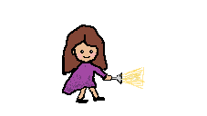

Noteiktā laikā noķer pēc iespējas vairāk spoku, izvairies no bīstamajiem spokiem, un mēģini iekļauties laikā.
Lai iegūtu punktu, nospied pogu “Noķert spoku”. Katrs klikšķis pieskaita vienu punktu, un punktu skaits uzreiz tiek atjaunots spēles laukumā.
Skaņas efektu vari noklausīties, izmantojot atskaņotāja vadīklas. Nospied atskaņošanas pogu, lai atskaņotu klikšķa skaņu; skaņa nesākas automātiski, nospiežot punktu vākšanas pogu.
Skaņa palīdz saprast, ka darbība izdevās, un padara spoku mednieka spēli jautrāku un saistošāku.
Nākotnē spēli varētu papildināt ar spoku ķeršanu, laika ierobežojumu un dzīvību skaitu.

Skaņas loma spēlē — paziņot par veiksmīgu punkta iegūšanu un nostiprināt spēlētāja veiksmes sajūtu.
Punkti: 0